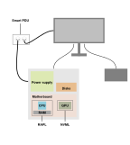
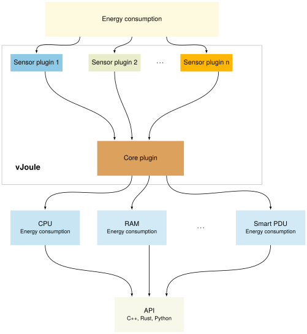

Welcome to vJoule's documentation
The environmental costs of the software and infrastructure they build and deploy are increasingly important to developers today. However, the collection of energy consumption data from machines can be time consuming and is generally hardware dependent.

vJoule is a tool that interfaces multiple sources of energy consumption and centralizes all energy readings in one place to provide a higher abstraction for developers and to help measure energy consumption. This document will give you all the information you need to have a successful start with vJoule.
vJoule is a tool developed at Davidson Consulting and inspired by other tools like PowerAPI.
